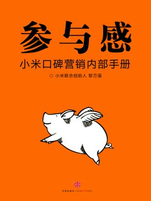
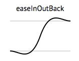
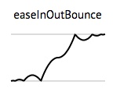

HTML5 & CSS 新特性
在小米网的应用
by Sivan Sun
小米网前端的主要工作
http://www.mi.com/
在别人眼中——
「没错，这就是小米网前端的全部工作~ :P」

我们还在做些什么？
- 小米网电商站（大陆站、海外站）
- 明星商品产品站
- 小米社区
- 各种活动页（米粉节、频繁的促销）
我们面临的问题：
- 项目多、开发周期短；
- 交互变化多，难以规范化；
- 要给用户提供新鲜感。
产品汪经常对我们说：
「所有元素要动起来，显得活泼、大气~」
（但是往往不会告诉你具体应该怎么动……）

射鸡湿经常对我们说：
「❤ 总之，我希望页面效果是 bling bling 的~ ❤」

领导说……

User.addEventListener('参与', function() {
console.log('客官别走，让我陪你玩耍陪你飞！');
});HTML5 & CSS3
开发要点
- 动态；
- 好玩；
- 美观。
动画效果实践与优化
如何让页面看起来「你好活泼！」又不「你抽风啊？」
60FPS & 1000/60

目前主流的动画实现方式
- jQuery Animate（setInterval）：易用，低效，兼容好；
- CSS Transition：硬件加速、移动端兼容，高效；
- requestAnimationFrame：易用，充分发挥浏览器性能。
影响动画效果的因素
浏览器的渲染方式：Layout -> Paint -> Composite
- 频繁重绘，改变颜色、背景图等；
- 频繁触发 Layout 导致回流，改变位置影响文档流。
Link: csstriggers.com
jQuery $.animate()
想起来很美，用起来很丑。
为什么不用 $.animate()
jQuery 无法解决频繁触发 Layout 导致的抽动。
var h1 = element1.clientHeight; // Read
element1.style.height = (h1 * 2) + 'px'; // Write (invalidates layout)
var h2 = element2.clientHeight; // Read (triggers layout)
element2.style.height = (h2 * 2) + 'px'; // Write (invalidates layout)
var h3 = element3.clientHeight; // Read (triggers layout)
element3.style.height = (h3 * 2) + 'px'; // Write (invalidates layout)在 JavaScript 中解决
// Read
var h1 = element1.clientHeight;
var h2 = element2.clientHeight;
var h3 = element3.clientHeight;
// Write (invalidates layout)
element1.style.height = (h1 * 2) + 'px';
element2.style.height = (h2 * 2) + 'px';
element3.style.height = (h3 * 2) + 'px';为什么不用 $.animate()
$.animate() 方法基于 setInterval，易导致堆积回调，最终导致跳帧。
// from jQuery 1.11-stable
jQuery.fx.interval = 13;
jQuery.fx.start = function() {
if ( !timerId ) {
timerId = setInterval( jQuery.fx.tick, jQuery.fx.interval );
}
};CSS Transition/Animation
画龙点睛的动画效果
易用
一行代码，两个属性。
/* CSS transition */
.xm-transition {
transition: opacity 2s, transform 1s;
}
/* CSS animation */
.xm-animation {
animation: mitu 2s;
}
排队米兔的诞生
动画曲线


贝塞尔曲线[Demo]
Link: http://easings.net/zh-cn
性能
硬件加速：一种特性，而非功能。
/* 创建 GPU 层，这是一种 hacker! */
.xm-3d-layer {
transform: translate3d(0, 10px, 0);
}既然硬件加速这么牛X，为什么不这样？
*, *:before, *:after {
transform: translate3d(0, 0, 0);
}- 不是所有的 CSS 属性都能获得 GPU 加速；
- GPU 传输的开销，WebKit 需要手动触发
- Firefox/IE 为所有动画都采取硬件加速
will-change属性
CSS 动画的注意事项
::before&::after- CSS transition对 translate/scale/rotate 缺乏独立的控制；
- CSS animation 的动画曲线会应用到所有变化属性上；
- 手写稍微复杂点的 keyframes 像噩梦；
- API：
$elm.on('transitionend', function() {});$elm.on('animationstart', function() {});
CSS Transition/Animation 演示
- Link: www.mi.com/dianyuan10400/
- Link: Animate.css
- Link: cssshake
JavaScript Animation
aka requestAnimationFrame, rAF
jQuery 动画 != JS 动画
按时间变化 -> 按每帧变化
同样的事情，不同的处理
// Read
var h1 = element1.clientHeight;
// Write
requestAnimationFrame(function() {
element1.style.height = (h1 * 2) + 'px';
});
// Read
var h2 = element2.clientHeight;
// Write
requestAnimationFrame(function() {
element2.style.height = (h2 * 2) + 'px';
});rAF 动画的优势
- 相比 CSS 动画有更好的掌控；
- 也有硬件加速喔~
- 合理降低 CPU 使用；
- 自动降帧；
- 老式浏览器降级至 setInterval 或 setTimeout。
Link: 十一出行晒装备
setInterval vs. requestAnimationFrame
为什么 jQuery 用 setInterval 而不用 rAF？
成熟的方案
- velocity.js：轻巧高效，与 $.animate() API 相同；
- GreenSock：高效全能。
特点比较
| jQuery | CSS Transitions | JavaScript Animation | |
|---|---|---|---|
| 性能 | Bad | Good | Good |
| 效果 | Not bad | Not bad | Good |
| 功能 | Good | Not bad | Good |
| 兼容 | Good | Bad IE10+ | Good IE10+ |
| 避免使用 | 简单交互 | 复杂交互 |
一切脱离产品需求的技术选择都是耍流氓
- 页面增强动画 -> CSS
- 复杂动画交互 -> rAF
好玩的交互
<canvas>
- Link: 小米活塞耳机 炫彩版 慧眼识色
- Link: 小米网圣诞季 / 小米电视圣诞礼
- 兼容受限
- 性能问题
<audio> / <video>
- Link: 小米空气净化器
- 视频倒放处理
- Safari 的颜色管理问题
APNG
这货根本不是 HTML5 啊喂！
APNG 的兼容性
- Firefox、Safari 8 原生支持；
- 通过 <canvas> 实现 IE9+ 兼容
- Link: apng-canvas.js
- Link: apngasm
gif vs. apng vs. png sprite
| gif | apng | png sprite | |
|---|---|---|---|
| 颜色 | 256 | 24位 | 24位 |
| 透明度 | 索引透明，有毛边 | Alpha 透明 | Alpha 透明 |
| 尺寸 | 中 | 小 | 大 |
| 兼容 | Good | IE9+ | IE7+ |
| 底色固定 | 可降级 | 兼容 |
好看的细节
视网膜化
目前可能是国内仅有的几家适配 retina 屏的网站。
- <img>：
srcset - CSS background：
-webkit-image-set
视网膜化过程中遇到的问题
- 采用
-webkit-image-set影响 background transition - 如何做出大尺寸、小体积的图片？降低画质，图片优化
icon font
- 跨平台；
- 体积小，减少 http 请求；
- 完美适配 retina 屏；
- 矢量，可任意修改颜色和大小；
- 易于维护。
使用方法
@font-face {font-family: 'iconfont';
src: url('iconfont.eot'); /* IE9*/
src: url('iconfont.eot?#iefix') format('embedded-opentype'), /* IE6-IE8 */
url('iconfont.woff') format('woff'), /* chrome、firefox */
url('iconfont.ttf') format('truetype'), /* chrome、firefox、opera、Safari, Android, iOS 4.2+*/
url('iconfont.svg#iconfont') format('svg'); /* iOS 4.1- */
}Firefox 的问题
- 同域处理
- 服务器改配置
- base64 ✓
中文 web font
为什么要用中文 web font？
- 设计师对产品站美观程度的要求；
- 去图片化，减少 http 请求；
- 比图片更好维护，无需设计师介入。
- 可能是国内首先采用中文 web font 的网站？
开发过程
- 中文字体文件大？只生成用到的文字。
- 版权？买买买。
- 字体如何生成？对接字体提供商给出的转换接口。
Link: www.mi.com/mi4/
造轮子

在没有合适解决方案的时候再造轮子
- modal.js
- slides.js
- lazyload
- ...
不为了造轮子而造轮子
- shadow DOM
- Link: i.huodong.mi.com/tvzan/default/setCity